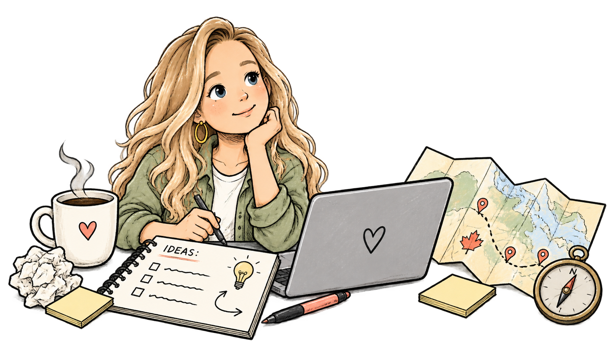
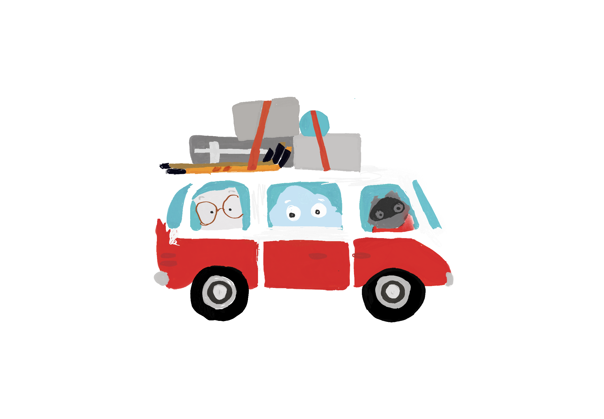
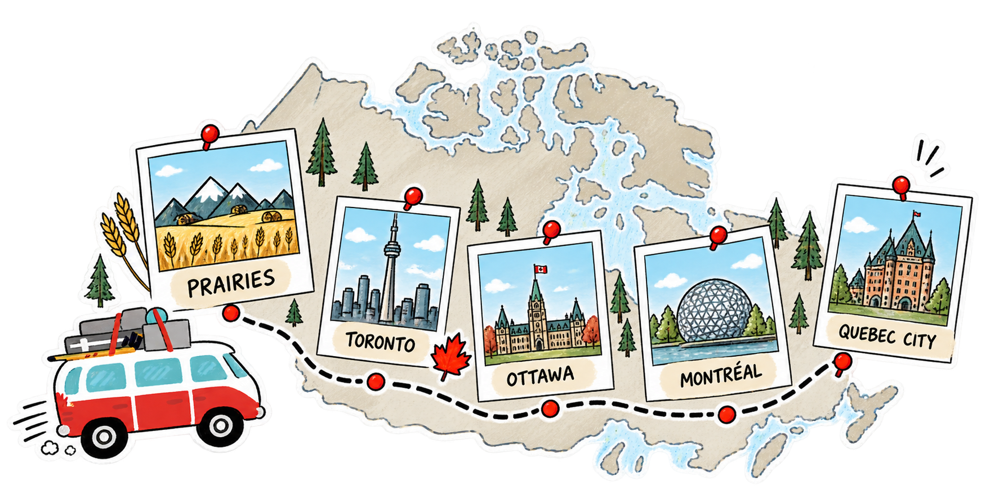
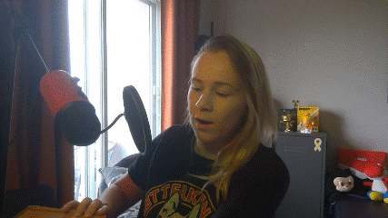
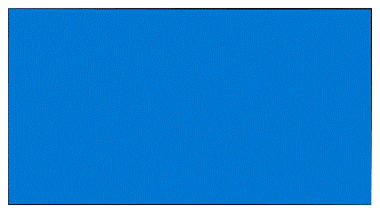
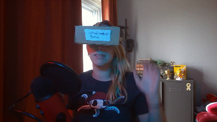

One day we were planning in-person meetups across Canada. The next, everything went digital.
How do you make a virtual meetup feel like an experience people want to show up for? and not just of another online video.


What made people excited to come to our events before?
It wasn't just the content. It was the jokes, the fun. The weird little moments between sessions. I wanted to recreate that feeling.

One of our earliest decisions was to build around characters instead of people.
It kept the experience approachable and universal. While giving us friendly characters we could reuse across videos, social posts, and other campaigns.

From hockey sticks on the roof to maple leaves throughout the animations, every detail reinforced the feeling that this was a road trip across Canada. Not just another online event.

I wanted to think about what a virtual experience could do differently.
I wanted us to go cross country, virtually, stopping in different regions along the way to experience
something unique about that place. The people, the environment, the fun.
That meant treatinf everything around the sessions as part of the experience. The transitions. The
social content. The little jokes. Even the moments that would normally have been empty space.
I paid attention to what people engaged with, what got a reaction, and where the experience started to
feel too much like a standard online event.
The little things mattered. A joke landing. What questions they asked. The moments people
talked about afterwards.
The goal wasn't to recreate an in-person event on a screen. It was to figure out what made those events
feel
like us in the first place.
Characters, running jokes, local references and unexpected moments gave each stop its own personality
while
making the whole tour feel connected.
People showed up. But more importantly, they played along.
The creative pieces became something recognizable from one stop to the next, turning a series of virtual
sessions into something that felt more like a community experience than a webinar.
Before this project, I thought a lot about event content. This project pushed me to think about
everything
around it.
Sure, people remember the useful technical session. But they also remember the silly jokes. They
remember the transitions
between sessions that could have been awkward and boring, but somehow became part of the fun. They
remember the ridiculous
cardboard VR headset someone put on.
Putting time and energy into these moments are part of what makes people want to come back.


